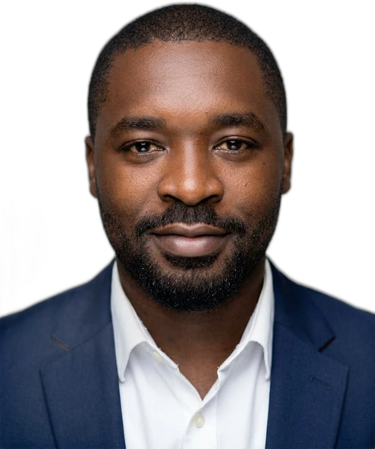

Ryan Tchuisseu

Je conçois des systèmes d’IA qui tournent en production, et j’en mesure les effets.
/À propos
Ingénieur Big Data formé en France, je construis des agents IA, des modèles de détection et des sites web pour des entreprises et des associations. Ma règle : l’humain garde la décision finale, et chaque projet se juge sur un chiffre, en heures gagnées ou en risques évités.
Projets
/Méthode
Avant d’écrire une ligne de code, je formalise le processus réel. Pour Stroke Action, le cahier des charges vient des statuts et du plan stratégique 2026-2030. Chez ASCOMA, 10 scénarios de fraude ont été traduits en indicateurs avec les auditeurs.
L’agent propose, l’humain décide. En comptabilité comme en santé publique, une erreur validée automatiquement coûte plus cher que le temps gagné. Chaque chaîne s’arrête volontairement devant la décision qui compte.
Un projet se juge sur un chiffre, pas sur une impression. Les sorties des agents sont notées sur 100 lors des revues, et les modèles de fraude sont évalués en précision, rappel et PR-AUC, jamais en exactitude seule.